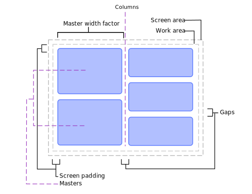

Class tag
awesome tag API
Furthermore to the classes described here, one can also use signals as described in signals.

Creating tags:
The default config initializes tags like this:
awful.tag(
{ "1", "2", "3", "4", "5", "6", "7", "8", "9" },
s,
awful.layout.layouts[1]
)
If you wish to have tags with different properties, then awful.tag.add is a better choice:
awful.tag.add("First tag", { icon = "/path/to/icon1.png", layout = awful.layout.suit.tile, master_fill_policy = "master_width_factor", gap_single_client = true, gap = 15, screen = s, selected = true, }) awful.tag.add("Second tag", { icon = "/path/to/icon2.png", layout = awful.layout.suit.max, screen = s, })
Note: the example above sets “First tag” to be selected explicitly, because otherwise you will find yourself without any selected tag.
Accessing tags:
To access the “current tags”, use
local tags = awful.screen.focused().selected_tags
See: awful.screen.focused
See: screen.selected_tags
To ignore the corner case where multiple tags are selected:
local t = awful.screen.focused().selected_tag
See: screen.selected_tag
To get all tags for the focused screen:
local tags = awful.screen.focused().tags
See: screen.tags
To get all tags:
local tags = root.tags()
To get the current tag of the focused client:
local t = client.focus and client.focus.first_tag or nil
See: client.focus See: client.first_tag
To get a tag from its name:
local t = awful.tag.find_by_name(awful.screen.focused(), "name")
Common shortcuts:
Here is a few useful shortcuts not part of the default rc.lua. Add these
functions above – {{{ Key bindings:
Delete the current tag
local function delete_tag() local t = awful.screen.focused().selected_tag if not t then return end t:delete() end
Create a new tag at the end of the list
local function add_tag() awful.tag.add("NewTag", { screen = awful.screen.focused(), layout = awful.layout.suit.floating }):view_only() end
Rename the current tag
local function rename_tag() awful.prompt.run { prompt = "New tag name: ", textbox = awful.screen.focused().mypromptbox.widget, exe_callback = function(new_name) if not new_name or #new_name == 0 then return end local t = awful.screen.focused().selected_tag if t then t.name = new_name end end } end
Move the focused client to a new tag
local function move_to_new_tag() local c = client.focus if not c then return end local t = awful.tag.add(c.class,{screen= c.screen }) c:tags({t}) t:view_only() end
Copy the current tag at the end of the list
local function copy_tag() local t = awful.screen.focused().selected_tag if not t then return end local clients = t:clients() local t2 = awful.tag.add(t.name, awful.tag.getdata(t)) t2:clients(clients) t2:view_only() end
And, in the globalkeys table:
awful.key({ modkey, }, "a", add_tag,
{description = "add a tag", group = "tag"}),
awful.key({ modkey, "Shift" }, "a", delete_tag,
{description = "delete the current tag", group = "tag"}),
awful.key({ modkey, "Control" }, "a", move_to_new_tag,
{description = "add a tag with the focused client", group = "tag"}),
awful.key({ modkey, "Mod1" }, "a", copy_tag,
{description = "create a copy of the current tag", group = "tag"}),
awful.key({ modkey, "Shift" }, "r", rename_tag,
{description = "rename the current tag", group = "tag"}),
See the global keybindings for more information about the keybindings.
Some signal names are starting with a dot. These dots are artefacts from the documentation generation, you get the real signal name by removing the starting dot.
Info:
- Copyright: 2008-2009 Julien Danjou
- Author: Julien Danjou <[email protected]>
Functions
Object properties
| name | Tag name. |
| selected | True if the tag is selected to be viewed. |
| activated | True if the tag is active and can be used. |
| index | The tag index. |
| screen | The tag screen. |
| master_width_factor | The tag master width factor. |
| layout | The tag client layout. |
| layouts | The (proposed) list of available layouts for this tag. |
| volatile | Define if the tag must be deleted when the last client is untagged. |
| gap | The gap (spacing, also called useless_gap) between clients. |
| gap_single_client | Enable gaps for a single client. |
| master_fill_policy | Set size fill policy for the master client(s). |
| master_count | Set the number of master windows. |
| icon | Set the tag icon. |
| column_count | Set the number of columns. |
Signals
| request::select | |
| tagged | When a client gets tagged with this tag. |
| untagged | When a client gets untagged with this tag. |
| property::urgent | True when a tagged client is urgent |
| property::urgent_count | The number of urgent tagged clients |
| request::screen | Emitted when a screen is removed. |
| removal-pending | Emitted after request::screen if no new screen has been set. |
Theme variables
| beautiful.master_width_factor | The default master width factor |
| beautiful.useless_gap | The default gap. |
| beautiful.gap_single_client | Enable gaps for a single client. |
| beautiful.master_fill_policy | The default fill policy. |
| beautiful.master_count | The default number of master windows. |
| beautiful.column_count | The default number of columns. |
Deprecated functions
| awful.tag.move [deprecated] | Move a tag to an absolute position in the screen[]:tags() table. |
| awful.tag.swap [deprecated] | Swap 2 tags |
| awful.tag.delete [deprecated] | Delete a tag. |
| awful.tag.gettags [deprecated] | Get a list of all tags on a screen |
| awful.tag.setscreen [deprecated] | Set a tag’s screen |
| awful.tag.getscreen [deprecated] | Get a tag’s screen |
| awful.tag.selectedlist [deprecated] | Return a table with all visible tags |
| awful.tag.selected [deprecated] | Return only the first visible tag. |
| awful.tag.setmwfact [deprecated] | Set master width factor. |
| awful.tag.getmwfact [deprecated] | Get master width factor. |
| awful.tag.setlayout [deprecated] | Set layout. |
| awful.tag.setvolatile [deprecated] | Set if the tag must be deleted when the last client is untagged |
| awful.tag.getvolatile [deprecated] | Get if the tag must be deleted when the last client closes |
| awful.tag.setgap [deprecated] | Set the spacing between clients |
| awful.tag.getgap [deprecated] | Get the spacing between clients. |
| awful.tag.setmfpol [deprecated] | Set size fill policy for the master client(s) |
| awful.tag.getmfpol [deprecated] | Get size fill policy for the master client(s) |
| awful.tag.setnmaster [deprecated] | |
| awful.tag.getnmaster [deprecated] | Get the number of master windows. |
| awful.tag.seticon [deprecated] | Set the tag icon |
| awful.tag.geticon [deprecated] | Get the tag icon |
| awful.tag.setncol [deprecated] | Set number of column windows. |
| awful.tag.getncol [deprecated] | Get number of column windows. |
| awful.tag.getidx [deprecated] | Get a tag’s index in the gettags() table. |
| awful.tag.viewonly [deprecated] | View only a tag. |
| awful.tag.getdata [deprecated] | Get tag data table. |
| awful.tag.getproperty [deprecated] | Get a tag property. |
| awful.tag.setproperty [deprecated] | Set a tag property. |
| awful.tag.withcurrent [deprecated] | Tag a client with the set of current tags. |
Fields
| awful.tag.history.limit | The number of elements kept in the history. |
| awful.tag.layouts | An ordered list of layouts. |
Methods
| tag:instances () | Get the number of instances. |
| tag:clients (clients_table) | Get or set the clients attached to this tag. |
| tag:disconnect_signal (name, func) | Disconnect from a signal. |
| tag:emit_signal (name, ...) | Emit a signal. |
| tag:connect_signal (name, func) | Connect to a signal. |
| tag:swap (tag2) | Swap 2 tags |
| tag:delete ([fallback_tag=awful.tag.find_fallback()[, force=false]]) | Delete a tag. |
| tag:find_by_name (s, name) | Find a tag by name. |
| tag:view_only () | View only a tag. |
Functions
Methods- awful.tag.add (name, props)
-
Add a tag.
This function allow to create tags from a set of properties:
local t = awful.tag.add("my new tag", { screen = screen.primary, layout = awful.layout.suit.max, })- name The tag name, a string
- props The tags inital properties, a table
Returns:
-
The created tag
See also:
- awful.tag.new (names, screen, layout)
-
Create a set of tags and attach it to a screen.
- names The tag name, in a table
- screen The tag screen, or 1 if not set.
- layout The layout or layout table to set for this tags by default.
Returns:
-
A table with all created tags.
- awful.tag.find_fallback (screen, invalids)
-
Find a suitable fallback tag.
- screen The screen to look for a tag on. [awful.screen.focused()]
- invalids A table of tags we consider unacceptable. [selectedlist(scr)]
- awful.tag.history.update (obj)
-
Update the tag history.
- obj Screen object.
- awful.tag.history.restore (screen, idx)
-
Revert tag history.
- screen The screen.
- idx Index in history. Defaults to “previous” which is a special index toggling between last two selected sets of tags. Number (eg 1) will go back to the given index in history.
- awful.tag.incmwfact (add, t)
-
Increase master width factor.
- add Value to add to master width factor.
- t The tag to modify, if null tag.selected() is used.
See also:
- awful.tag.incgap (add, t)
-
Increase the spacing between clients
- add Value to add to the spacing between clients
- t The tag to modify, if null tag.selected() is used.
See also:
- awful.tag.togglemfpol (t)
-
Toggle size fill policy for the master client(s)
between “expand” and “master_width_factor”.
- t tag The tag to modify, if null tag.selected() is used.
See also:
- awful.tag.incnmaster (add[, t[, sensible=false]])
-
Increase the number of master windows.
- add Value to add to number of master windows.
- t The tag to modify, if null tag.selected() is used. (optional)
- sensible boolean Limit nmaster based on the number of visible tiled windows? (default false)
See also:
- awful.tag.incncol (add[, t[, sensible=false]])
-
Increase number of column windows.
- add Value to add to number of column windows.
- t The tag to modify, if null tag.selected() is used. (optional)
- sensible boolean Limit column_count based on the number of visible tiled windows? (default false)
- awful.tag.viewnone ([screen])
-
View no tag.
- screen int or screen The screen. (optional)
- awful.tag.viewidx (i[, screen])
-
View a tag by its taglist index.
This is equivalent to
screen.tags[i]:view_only()- i The relative index to see.
- screen The screen. (optional)
See also:
- awful.tag.viewnext (screen)
-
View next tag. This is the same as tag.viewidx(1).
- screen The screen.
- awful.tag.viewprev (screen)
-
View previous tag. This is the same a tag.viewidx(-1).
- screen The screen.
- awful.tag.viewmore (tags[, screen[, maximum=#tags]])
-
View only a set of tags.
If
maximumis set, there will be a limit on the number of new tag being selected. The tags already selected do not count. To do nothing if one or more of the tags are already selected, setmaximumto zero.- tags A table with tags to view only.
- screen The screen of the tags. (optional)
- maximum number The maximum number of tags to select. (default #tags)
- awful.tag.viewtoggle (t)
-
Toggle selection of a tag
- t tag Tag to be toggled
See also:
- awful.tag.attached_connect_signal (screen[, signal[, Callback]])
- Add a signal to all attached tags and all tags that will be attached in the future. When a tag is detached from the screen, its signal is removed.
Object properties
- name
-
Tag name.
Signal:
- property::name
Type:
- string
- selected
-
True if the tag is selected to be viewed.
Signal:
- property::selected
Type:
- boolean
- activated
-
True if the tag is active and can be used.
Signal:
- property::activated
Type:
- boolean
- index
-
The tag index.
The index is the position as shown in the awful.widget.taglist.
Signal:
- property::index
Type:
- integer
- screen
-
The tag screen.
Signal:
- property::screen
Type:
- screen
See also:
- master_width_factor
-
The tag master width factor.
The master width factor is one of the 5 main properties used to configure the layout. Each layout interpret (or ignore) this property differenly.
See the layout suit documentation for information about how the master width factor is used.
Signal:
- property::mwfact (deprecated)
- property::master_width_factor
Type:
- number Between 0 and 1
See also:
- layout
-
The tag client layout.
This property hold the layout. A layout can be either stateless or stateful. Stateless layouts are used by default by Awesome. They tile clients without any other overhead. They take an ordered list of clients and place them on the screen. Stateful layouts create an object instance for each tags and can store variables and metadata. Because of this, they are able to change over time and be serialized (saved).
Both types of layouts have valid usage scenarios.
Stateless layouts:
These layouts are stored in
awful.layout.suit. They expose a table with 2 fields:- name (string): The layout name. This should be unique.
- arrange (function): The function called when the clients need to be placed. The only parameter is a table or arguments returned by awful.layout.parameters
Stateful layouts:
The stateful layouts API is the same as stateless, but they are a function returining a layout instead of a layout itself. They also should have an
is_dynamic = trueproperty. If they don’t, awful.tag will create a new instance everytime the layout is set. If they do, the instance will be cached and re-used.Signal:
- property::layout
Type:
- layout layout or function A layout table or a constructor function
See also:
- layouts
-
The (proposed) list of available layouts for this tag.
This property allows to define a subset (or superset) of layouts available in the “rotation table”. In the default configuration file,
Mod4+SpaceandMod4+Shift+Spaceare used to switch between tags. The awful.widget.layoutlist also uses this as its default layout filter.By default, it will be the same as awful.layout.layouts unless there the a layout not present is used. If that’s the case they will be added at the front of the list.
Type:
- table
See also:
- volatile
-
Define if the tag must be deleted when the last client is untagged.
This is useful to create “throw-away” tags for operation like 50/50 side-by-side views.
local t = awful.tag.add("Temporary", { screen = client.focus.screen, volatile = true, clients = { client.focus, awful.client.focus.history.get(client.focus.screen, 1) } }Signal:
- property::volatile
Type:
- boolean
- gap
-
The gap (spacing, also called useless_gap) between clients.
This property allow to waste space on the screen in the name of style, unicorns and readability.
Signal:
- property::useless_gap
Type:
- number The value has to be greater than zero.
See also:
- gap_single_client
-
Enable gaps for a single client.
Signal:
- property::gap_single_client
Type:
- boolean Enable gaps for a single client
- master_fill_policy
-
Set size fill policy for the master client(s).
Possible values:
- expand: Take all the space
- master_width_factor: Only take the ratio defined by the master_width_factor
Signal:
- property::master_fill_policy
Type:
- string “expand” or “master_width_factor”
- master_count
-
Set the number of master windows.
Signal:
- property::nmaster (deprecated)
- property::master_count
Type:
- integer nmaster Only positive values are accepted
- icon
-
Set the tag icon.
Signal:
- property::icon
Type:
- icon path or surface The icon
- column_count
-
Set the number of columns.
Signal:
- property::ncol (deprecated)
- property::column_count
Type:
- ncol integer Has to be greater than 1
Signals
- request::select
- tagged
-
When a client gets tagged with this tag.
Arguments:
- c client.object The tagged client.
- untagged
-
When a client gets untagged with this tag.
Arguments:
- c client.object The untagged client.
- property::urgent
-
True when a tagged client is urgent
See also:
- property::urgent_count
-
The number of urgent tagged clients
See also:
- request::screen
- Emitted when a screen is removed. This can be used to salvage existing tags by moving them to a new screen (or creating a virtual screen). By default, there is no handler for this request. The tags will be deleted. To prevent this, an handler for this request must simply set a new screen for the tag.
- removal-pending
- Emitted after request::screen if no new screen has been set. The tag will be deleted, this is a last chance to move its clients before they are sent to a fallback tag. Connect to request::screen if you wish to salvage the tag.
Theme variables
- beautiful.master_width_factor
-
The default master width factor
Type:
- number (default: 0.5)
See also:
- beautiful.useless_gap
-
The default gap.
Type:
- number (default: 0)
See also:
- beautiful.gap_single_client
-
Enable gaps for a single client.
Type:
- boolean (default: true)
See also:
- beautiful.master_fill_policy
-
The default fill policy.
Possible values:
- expand: Take all the space
- master_width_factor: Only take the ratio defined by the master_width_factor
Type:
- string (default: “expand”)
See also:
- beautiful.master_count
-
The default number of master windows.
Type:
- integer (default: 1)
See also:
- beautiful.column_count
-
The default number of columns.
Type:
- integer (default: 1)
See also:
Deprecated functions
- awful.tag.move [deprecated]
-
Move a tag to an absolute position in the screen[]:tags() table.
param:
- new_index Integer absolute position in the table to insert.
- target_tag The tag that should be moved. If null, the currently selected tag is used.
See also:
- awful.tag.swap [deprecated]
-
Swap 2 tags
param:
- tag1 The first tag
- tag2 The second tag
See also:
- awful.tag.delete [deprecated]
-
Delete a tag.
param:
- target_tag Optional tag object to delete. [selected()]
- fallback_tag Tag to assign stickied tags to. [~selected()]
See also:
- awful.tag.gettags [deprecated]
-
Get a list of all tags on a screen
param:
- s screen Screen
See also:
- awful.tag.setscreen [deprecated]
-
Set a tag’s screen
param:
- s Screen
- t tag object
See also:
- awful.tag.getscreen [deprecated]
-
Get a tag’s screen
param:
- t tag object (optional)
See also:
- awful.tag.selectedlist [deprecated]
-
Return a table with all visible tags
param:
- s Screen.
See also:
- awful.tag.selected [deprecated]
-
Return only the first visible tag.
param:
- s Screen.
See also:
- awful.tag.setmwfact [deprecated]
-
Set master width factor.
param:
- mwfact Master width factor.
- t The tag to modify, if null tag.selected() is used.
See also:
- awful.tag.getmwfact [deprecated]
-
Get master width factor.
param:
- t The tag. (optional)
See also:
- awful.tag.setlayout [deprecated]
-
Set layout.
param:
- layout a layout table or a constructor function
- t The tag to modify
See also:
- awful.tag.setvolatile [deprecated]
-
Set if the tag must be deleted when the last client is untagged
param:
- volatile boolean If the tag must be deleted when the last client is untagged
- t The tag to modify, if null tag.selected() is used.
See also:
- awful.tag.getvolatile [deprecated]
-
Get if the tag must be deleted when the last client closes
param:
- t The tag to modify, if null tag.selected() is used.
See also:
- awful.tag.setgap [deprecated]
-
Set the spacing between clients
param:
- useless_gap The spacing between clients
- t The tag to modify, if null tag.selected() is used.
See also:
- awful.tag.getgap [deprecated]
-
Get the spacing between clients.
param:
- t tag The tag. (default tag.selected())
- numclients int Number of (tiled) clients. Passing this will return 0 for a single client. You can override this function to change this behavior. (optional)
See also:
- awful.tag.setmfpol [deprecated]
-
Set size fill policy for the master client(s)
param:
- policy string Can be set to “expand” (fill all the available workarea) or “master_width_factor” (fill only an area inside the master width factor)
- t tag The tag to modify (default tag.selected())
See also:
- awful.tag.getmfpol [deprecated]
-
Get size fill policy for the master client(s)
param:
- t tag The tag (default tag.selected())
See also:
- awful.tag.setnmaster [deprecated]
-
param:
- nmaster The number of master windows.
- t The tag. (optional)
See also:
- awful.tag.getnmaster [deprecated]
-
Get the number of master windows.
param:
- t The tag. (optional)
See also:
- awful.tag.seticon [deprecated]
-
Set the tag icon
param:
- icon the icon to set, either path or image object
- _tag the tag
See also:
- awful.tag.geticon [deprecated]
-
Get the tag icon
param:
- _tag the tag
See also:
- awful.tag.setncol [deprecated]
-
Set number of column windows.
param:
- ncol The number of column.
- t The tag to modify, if null tag.selected() is used.
See also:
- awful.tag.getncol [deprecated]
-
Get number of column windows.
param:
- t The tag. (optional)
See also:
- awful.tag.getidx [deprecated]
-
Get a tag’s index in the gettags() table.
param:
- query_tag The tag object to find. [selected()]
See also:
- awful.tag.viewonly [deprecated]
-
View only a tag.
param:
- t The tag object.
See also:
- awful.tag.getdata [deprecated]
-
Get tag data table.
Do not use.
param:
- _tag tag The tag.
- awful.tag.getproperty [deprecated]
-
Get a tag property.
Use
_tag.propdirectly.param:
- awful.tag.setproperty [deprecated]
-
Set a tag property.
This properties are internal to awful. Some are used to draw taglist, or to
handle layout, etc.
Use
_tag.prop = valueparam:
- _tag The tag.
- prop The property name.
- value The value.
- awful.tag.withcurrent [deprecated]
-
Tag a client with the set of current tags.
param:
- c The client to tag.
Fields
- awful.tag.history.limit
-
The number of elements kept in the history.
- limit integer (default 20)
- awful.tag.layouts
-
An ordered list of layouts.
awful.tag.layoutIs usually defined in rc.lua. It store the list of layouts used when selecting the previous and next layouts. This is the default:-- Table of layouts to cover with awful.layout.inc, order matters. awful.layout.layouts = { awful.layout.suit.floating, awful.layout.suit.tile, awful.layout.suit.tile.left, awful.layout.suit.tile.bottom, awful.layout.suit.tile.top, awful.layout.suit.fair, awful.layout.suit.fair.horizontal, awful.layout.suit.spiral, awful.layout.suit.spiral.dwindle, awful.layout.suit.max, awful.layout.suit.max.fullscreen, awful.layout.suit.magnifier, awful.layout.suit.corner.nw, -- awful.layout.suit.corner.ne, -- awful.layout.suit.corner.sw, -- awful.layout.suit.corner.se, }
Methods
- tag:instances ()
-
Get the number of instances.
Returns:
-
The number of tag objects alive.
- tag:clients (clients_table)
-
Get or set the clients attached to this tag.
- clients_table None or a table of clients to set as being tagged with this tag.
Returns:
-
A table with the clients attached to this tags.
- tag:disconnect_signal (name, func)
-
Disconnect from a signal.
- name string The name of the signal.
- func function The callback that should be disconnected.
- tag:emit_signal (name, ...)
-
Emit a signal.
- name string The name of the signal.
- ... Extra arguments for the callback functions. Each connected function receives the object as first argument and then any extra arguments that are given to emit_signal().
- tag:connect_signal (name, func)
-
Connect to a signal.
- name string The name of the signal.
- func function The callback to call when the signal is emitted.
- tag:swap (tag2)
-
Swap 2 tags
- tag2 The second tag
See also:
- tag:delete ([fallback_tag=awful.tag.find_fallback()[, force=false]])
-
Delete a tag.
To delete the current tag:
mouse.screen.selected_tag:delete()- fallback_tag tag Tag to assign stickied tags to. (default awful.tag.find_fallback())
- force boolean Move even non-sticky clients to the fallback tag. (default false)
Returns:
-
Returns true if the tag is successfully deleted.
If there are no clients exclusively on this tag then delete it. Any
stickied clients are assigned to the optional ‘fallback_tag’.
If after deleting the tag there is no selected tag, try and restore from
history or select the first tag on the screen.
See also:
- tag:find_by_name (s, name)
-
Find a tag by name.
Returns:
-
The tag found, or
nilUsage:
-- For the current screen local t = awful.tag.find_by_name(awful.screen.focused(), "name") -- For a screen index local t = awful.tag.find_by_name(screen[1], "name") -- For all screens local t = awful.tag.find_by_name(nil, "name")
- tag:view_only ()
-
View only a tag.
See also: